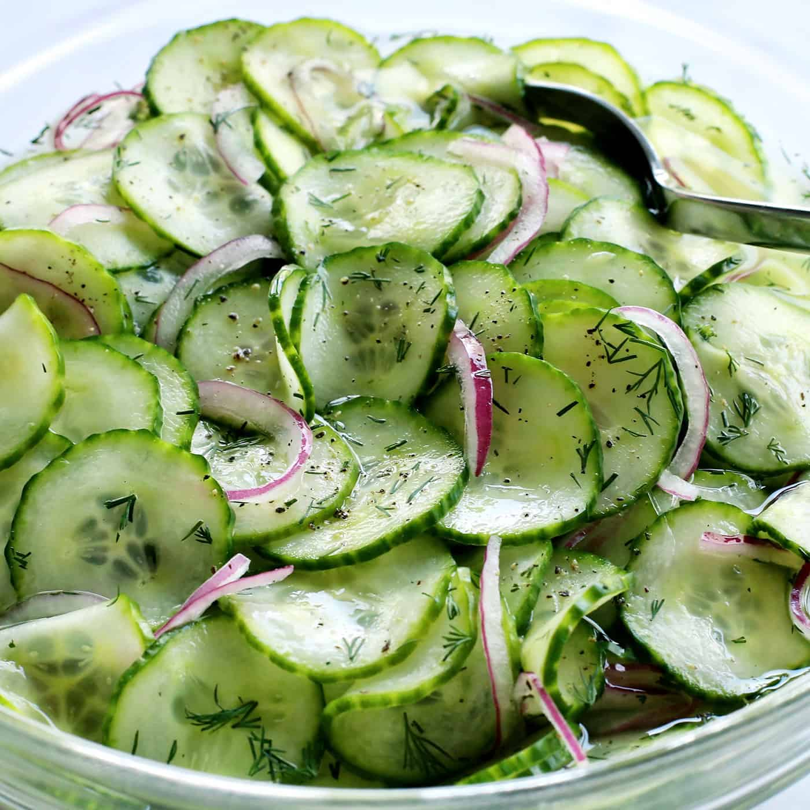

Creamy Cucumber Salad
A crunchy, creamy cucumber salad made with tahini, lemon, and fresh dill.

Ingredients
- 1 lb persian cucumber, cut into 3- by 5/8-inch spears
- 3/4 tsp diamond crystal kosher salt
- 1 tbsp tahini paste
- 1 tsp lemon juice
- 2 tbsp fresh dill, chopped
- 1 garlic clove, finely grated or minced
- 1/2 shallot, finely minced
Directions
- In a large bowl, add cucumber spears and 1/4 teaspoon salt and toss to combine. Transfer cucumbers to a colander and set inside large bowl. Cover and refrigerate for 30 minutes.
- Pat cucumbers dry with paper towels or a clean kitchen towel; set aside. Discard any accumulated liquid and wipe out bowl.
- In now-empty bowl, add tahini and lemon juice and whisk to combine; the mixture will seize and turn pasty. Add 1 1/2 teaspoons cold water and whisk until a smooth sauce forms. Add remaining 1/2 teaspoon salt, lemon zest, dill, garlic, and shallot, and whisk to combine. The sauce should very slowly lose its shape if you let ribbons of it drop from the whisk into the bowl (if sauce is too thick, whisk in cold water in 1/4-teaspoon increments to achieve desired consistency).
- Add cucumber spears and toss until evenly coated with sauce. Transfer to a serving plate, garnish with dill, and serve.
Special thanks to Serious Eats for the recipe